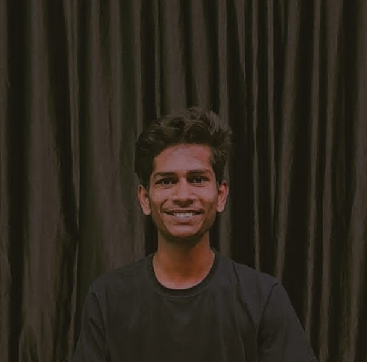

Adarsh milan
Enthusiastic and driven individual with a strong foundation in
[mention relevant skills, e.g., programming languages, computer
science fundamentals].
Eager to learn and grow in a challenging and supportive environment.